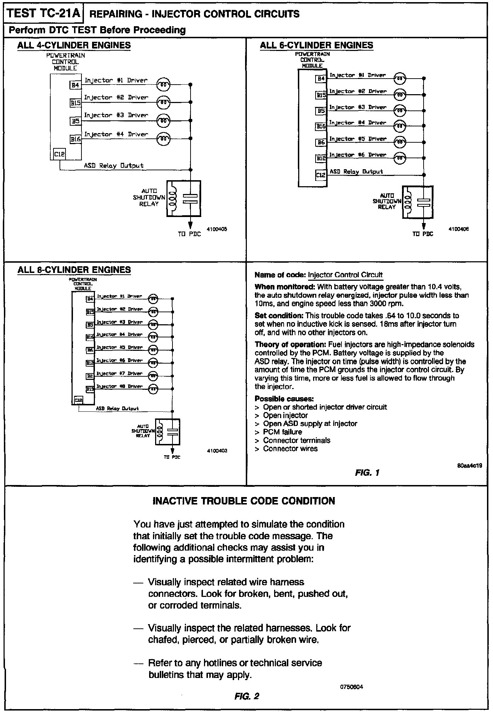
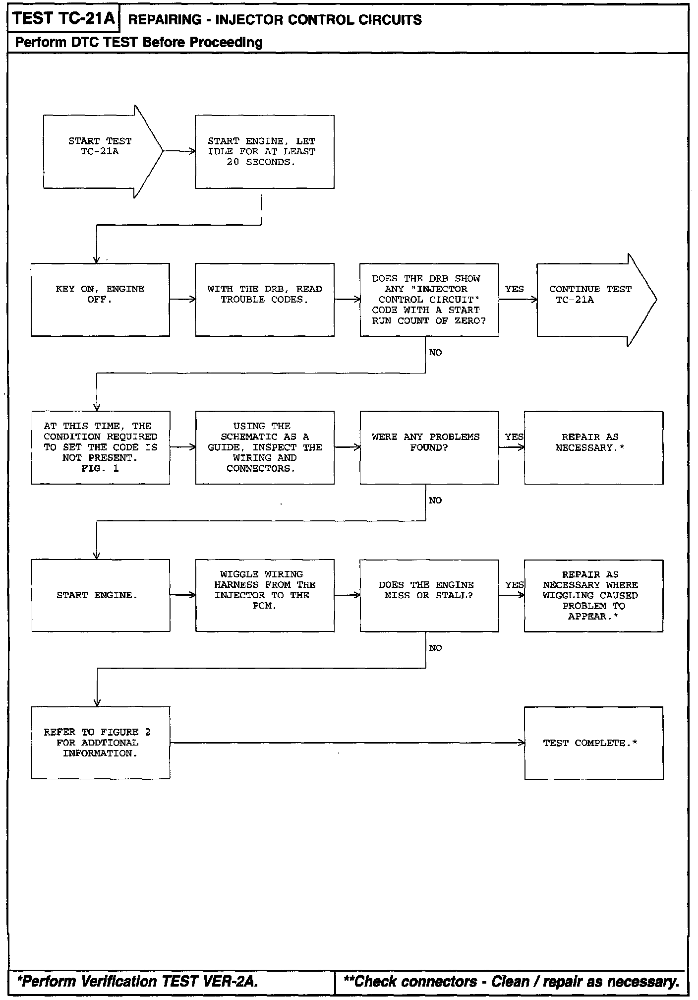
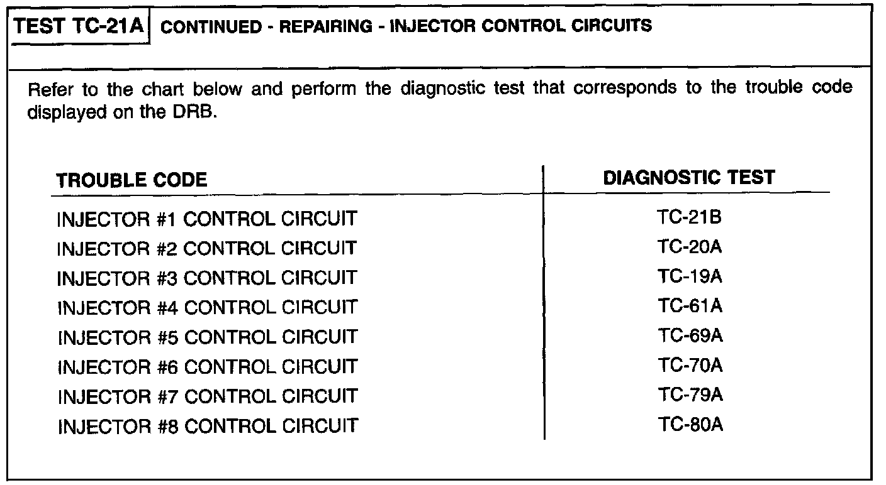

Operation CHARM
: Car repair manuals for everyone.
Русский
Home
>>
Jeep
>>
1997
>>
Grand Cherokee 4WD L6-4.0L VIN S
>>
Repair and Diagnosis
>>
A L L Diagnostic Trouble Codes ( DTC )
>>
Testing and Inspection
>>
Manufacturer Code Charts
>>
Trouble Code (TC) Tests
>>
TC-21A Injector #1 Control Circuits
TC-21A Injector #1 Control Circuits


